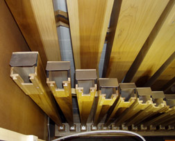
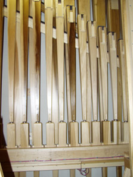
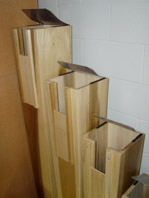

|
Bazuin Dutch Posaune German Trombone English, Italian, French |
Basun Danish, Norwegian, Swedish Buzain corruption Passunen German? Pusaun German? |
This entry is still under construction. The next time you visit, check the Revision History to see what's been added.
A chorus reed of 32' or 16' pitch.
The Dutch word bazuin means �trumpet� or �trombone�; the name Buzain appears to be a misspelling originating with Wedgwood.
The illustration is Audsley's; click on it for a larger image.
The photographs below show three different views of the 16' Posaune, with wooden resonators and boots, from the Pedal of the organ in St. Luke's United Methodist Church, Indianapolis, Indiana, USA, by Goulding & Wood. Click on them for larger images.
  Ths is one of the most common stops; nearly one third of the organs listed in Osiris contain a Posaune, and one in ten contains a Trombone. It contains three dozen example of Bazuin. We know of only two examples of Buzain. No examples are known of Passunen, mentioned only by Adlung.
Buzain 16', Hoofdwerk; Crystal Cathedral, Garden Grove, California, USA; Ruffatti.
Buzain 8', Pedal; St. Mark's Episcopal Church, Mount Kisco, New York, USA; Aeolian-Skinner 1951.
Pusaun 8', Hauptwerk; Stiftbasilika Klosterneuburg, Vienna, Austria; Freundt 1642. This is the only known example of this name; the stop was added in 1990 by Kuhn.
See the Sound Files appendix for general information.
| Posaunen Baß 16', Pedal | Reinhardtsgrimma, Sachsen, Germany | Silbermann, 1731 | arpeggio |
| Posaune 16', Swell | Kellogg Auditorium, Battle Creek, Michigan, USA | Aeolian-Skinner, 1933 | St. Anne |
| Trombone 16', Pedal | St. Anne's Church, Moseley, Birmingham, England | Nicholson, 1989 | arpeggio |
|
Original site compiled by Edward L. Stauff. For educational use only. Trombone.html - Last updated 18 May 2008. |
Home Full Index |
{kind=link}